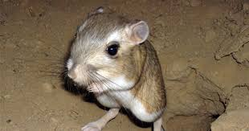
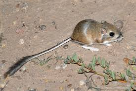

# the circuitry
# ---------------------------------

/week 7
# the kangaroo rat
# ---------------------------------


this is the kangaroo rat! it is an exceptionally cute little animal, but it is also really fascinating in its ability to be energy efficient and preserve the water and heat in its body, despite living in an extreme climate. the kangaroo rat's nasal passages function as a counter-current heat exchanger. when the rodent exhales, the walls of the nasal passage absorbs and stores the heat and moisture from the exhaled air. then, when the rodent inhales, the air reabsorbs the heat and moisture from the walls of the nasal passages. this reduces the need to warm and humidify inhaled air using metabolic heat, allowing the kangaroo rat to recover a whopping 83% of water, and preserve 88% of heat lost due to breathing.
# the nosehouse
# ---------------------------------
"nosehouse: heat-conserving ventilators based on nasal counterflow exchangers" by steven vogel builds upon the biological principle of the kangaroo rat's nasal passageways. vogel constructed this "nosehouse" where he replicates the upper respiratory tract of a kangaroo rat to ventilate and thermoregulate an enclosed space, such as a modern building, in an energy efficient manner. this is the model that i am attempting to replicate and build upon.
# the schematics
# ---------------------------------
vogel's diagram of model and exchanger
# the circuitry
# ---------------------------------
# the code
# ---------------------------------
# the product
# ---------------------------------
# the mess
# ---------------------------------
# future steps
# ---------------------------------